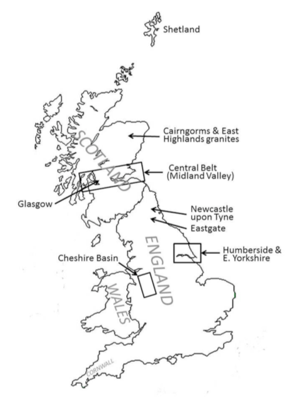
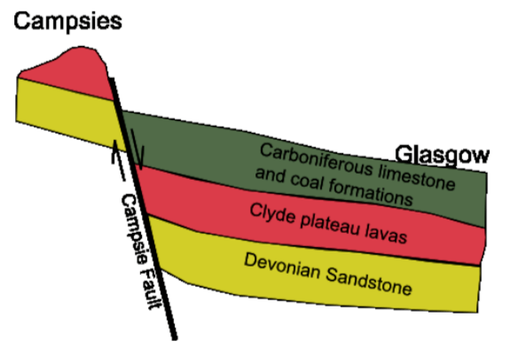
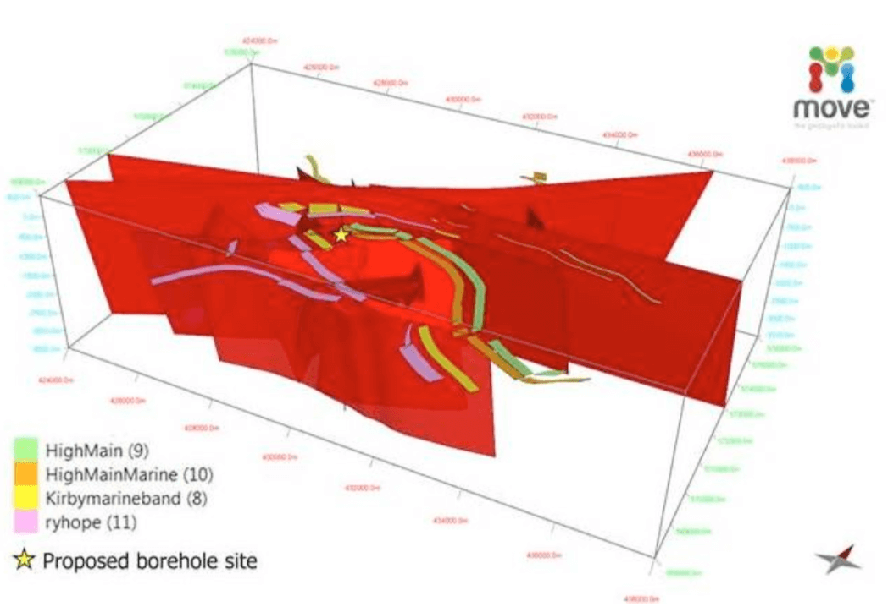

Renewing the Exploration Approach for Mid-Enthalpy Geothermal Systems: Examples from Northern England and Scotland
Paul L. Younger1,2,*, Michael E.J. Feliks2, Robert Westaway1, Alistair T. McCay1, Thomas L. Harley1,3, Thomas Elliott2, Gordon Stove3, Jenny Ellis4, Sean Watson1, and Andrew J. Waring1
1 School of Engineering, University of Glasgow, Glasgow G12 8QQ, Scotland, UK
2 Cluff Geothermal Ltd, Charter House, 13-15 Carteret Street, London SW1H 9DJ, UK
3 Adrok Ltd, 49-1 West Bowling Green Street, Edinburgh, EH6 5NX, Scotland, UK
4 Midland Valley Exploration Ltd, 144 West George Street, Glasgow G2 2HG, Scotland, UK * corresponding author paul.younger@glasgow.ac.uk
Keywords: exploration, fault, geochemistry, geophysics, geothermal, granite, radiometry, sandstone, structural, tectonic, UK
ABSTRACT
After a promising start in the 1970s and 80s, the UK rather fell behind other countries in the search for viable mid-enthalpy geothermal resources. This situation began to turn around in 2004, when the first of three deep geothermal exploration boreholes were drilled in northern England. What distinguished these from earlier drilling in Cornwall was the deliberate search for naturally high permeability associated with major faults, especially those that have undergone strike-slip reactivation during the Cenozoic. Boreholes at Eastgate in the North Pennines targeted buried radiothermal granite, whereas the 1,821m-deep Science Central Borehole in Newcastle upon Tyne targeted a postulated deep sedimentary aquifer (the Fell Sandstones), which were inferred to be connected laterally to the granitic heat source by a major fault (the reactivation of the Iapetus geo-suture). The drilling was in both cases rewarded with impressive heat flows, and in the case of Eastgate with what is believed to be the highest permeability yet found in a deep granite anywhere in the world. In parallel with these developments, a re-assessment was made of the pre-existing geothermal heat flow database for the UK, applying newly-standardised correction protocols for palaeoclimatic and topographic distortions, which were found to be particularly marked in Scotland (where only shallow boreholes had been used to establish geothermal gradients in the original 1980s analysis), Similar prospects in northern England (similar to that drilled at Science Central) are now the focus of commercial exploration efforts. Appraisal of fault dispositions relative to the present-day maximum compressive stress azimuth are being used to identify the most promising areas for intersecting fault-related permeability at depth. New geophysical tools – most notably atomic dielectric resonance scanning – are also being appraised for their ability to directly detect features (such as hot brines) which are indicative of localised convection in target fault zones and aquifers.
1. INTRODUCTION
After a promising start in geothermal exploration and resource quantification in the 1970s and 1980s (Downing and Gray 1986a,b; British Geological Survey 1990; Richards et al. 1994; Barker et al. 2000), the UK rather fell behind other countries in the search for viable mid-enthalpy geothermal resources. In part this is because the early projects were narrowly-focused on identifying resources capable of supporting electricity generation, deliberately ignoring direct-use possibilities. Power-only developments will always be challenging in anything other than high-enthalpy terrains, as the ratio of usable thermal energy (MWTH) to producible power (MWE) generally exceeds 4 and can be as much as 7 or even more. It could thus be said that the geothermal research programme of the 1970s-80s essentially asked the wrong question of the UK’s geothermal resources. For two decades that is where the matter rested, as the UK enjoyed energy independence and low energy prices thanks to abundant fossil fuels. Two things then changed. In 2004, with the North Sea hydrocarbon boom of already in marked decline, the UK became a net-importer of energy (Bolton 2013). Secondly, by the turn of the Millennium the political consensus had finally begun to coalesce around acceptance of the increasingly urgent need to address climate change, not least by displacing fossil fuels with renewables. In the realm of heating this is very challenging: heat accounts for 40% of all UK energy use, rising to 55% in the chillier northern climes of Scotland. At present, two- thirds of the natural gas consumed in the UK is used for heating, with 82% of UK households being dependent on domestic gas- fired boilers for all of their heating and hot water needs and most of their cooking (Younger 2014). Decarbonization of UK energy therefore requires that a replacement be found for gas-fired heating. Geothermal technologies offer one of very few possibilities for this. It is against this backdrop that the last decade has witnessed a renaissance of interest in geothermal energy in the UK (Younger et al. 2012). Several projects have been promoted: two building on the prior experience of the well-known “hot dry rock” (HDR) experiments in Cornwall (cf Richards et al. 1994), two targeting previously unexplored prospects in northern England. It is only the latter that have yet proceeded to drilling. This paper summarizes progress to date on those sites and takes a forward look at some new prospects under consideration elsewhere in northern England and in Scotland (Figure 1), drawing some tentative conclusions potentially applicable in the exploration and development of mid-enthalpy geothermal resources elsewhere in the world.
2. FIRST UK DEEP GEOTHERMAL BOREHOLES IN THE 21ST CENTURY
2.1. Radiothermal Granites in the North Pennines
Deep geothermal exploration in the UK was effectively suspended between 1987 (when the Southampton Borehole was drilled) and 2004, when the Eastgate No 1 Borehole was drilled, near Stanhope, County Durham, in the North Pennines hills of northern England. Eastgate No 1 targeted a Devonian-age radiothermal granite entirely buried beneath sedimentary cover of Carboniferous age. Although also targeting radiothermal granite, the exploration paradigm at Eastgate differed radically from that of the earlier Cornish HDR projects in that it was based on a deliberate search for naturally-high permeability associated with major faults (Manning et al. 2007), so that fracture stimulation would be unnecessary. The drilling of Eastgate No 1 was rewarded with what is believed to be the highest permeability yet found in deep granite anywhere in the world (Younger and Manning 2010), augmented by impressive heat flows that exceeded prior expectations. The presence of permeable fractures in the granite had been inferred on the basis of the detection of tepid, deep-seated chloride brines flowing into a fluorite mine 50m below the surface from the forehead of a mineral vein occupying a fault plane (Manning and Strutt 1990); the occurrence of these unusual waters alongside cooler, fresher, groundwaters clearly indicated a deep permeable source with a significant head. At the time of drilling Eastgate No 1, this occurrence was unexplained in terms of structural geology and current crustal stress conditions. Although the implicated fault (known as the Slitt Vein) was clearly permeable, it strikes WNW-ESE, which is almost perpendicular to the current axis of maximum compression in northern England (~ N-S). Given this configuration, one would have expected closure of the fault plane apertures, resulting in loss of permeability (cf Zoback 2010). Smith (2011) suggested three explanations for the occurrence of high permeability in and around the Slitt Vein:
 Figure 1: Location map of Great Britain indicating the districts and localities mentioned in the text- Dissolution of a previous mineral infill to leave a void, which might be expected had some regional level of weathering proceeded to this depth prior to the deposition of the marine sedimentary cover in the Carboniferous.
- Preservation of an original void formed by strike-slip displacement prior to the main phase of mineralization (around the Permo-Carboniferous boundary) by hydraulic isolation from the mineralizing fluids, or
- Opening of new voids by renewed strike-slip displacement after the cessation of mineralization.
Explanation (1) is disfavored by the lack of any residues consistent with sulfide mineral dissolution in the cuttings, and by the evidence of a second borehole (Eastgate No 2) which was drilled in 2010 at a site 300m away from the axis of the Slitt Vein, but penetrating beyond the horizon at which the most permeable fractures had been found in Eastgate No 1 (Younger et al. 2012). Explanation (2) is disfavored by the clear existence of hydraulic connectivity far beyond the immediate void intersected by the borehole (Younger and Manning 2010), which is inconsistent with the suggestion of hydraulic isolation. Hence option (3) seems the most likely. Subsequent detailed structural analysis of unpublished mine plans (courtesy of their owners, the Sherburn Stone Co Ltd) using the MOVE software by Midland Valley Exploration yielded evidence of substantial strike-slip rejuvenation of the Slitt Vein (and no doubt other parallel veins in the region, known locally as the ‘Quarter-Point Veins’) during the Tertiary period. This is consistent with a mounting body of evidence of synchronous strike-slip reactivation in adjoining regions of the UK (e.g. Holloway and Chadwick 1986; Turner 1997). The scale of such voids observed in mines near Eastgate (Smith 2011) is such that rather mild present-day compression has proved incapable of closing them; hence permeabilities as high as 170 darcies have been preserved (Younger and Manning 2010). Overall the evidence favors continued exploration along the known Quarter-Point structures in the North Pennines, and the temperatures estimated to be available at depths of only 3.5 to 4 km are estimated to be on the order of 120oC, which would support combined-heat-and-power (CHP) production using binary cycle technology. Since the completion of the most recent work at Eastgate in 2008, however, the region has been in deep economic depression, and the regional development agency that was originally planning to develop mixed residential and industrial properties on the Eastgate site was abolished by the incoming Coalition Government in 2010. Thus, despite very encouraging geothermal characteristics, the Eastgate system has yet to be developed.
2.2. The Fell Sandstones: Science Central
Meanwhile, a non-granite target was selected for early-stage exploration by deep drilling in 2010. The 1,821m-deep Science Central Borehole in Newcastle upon Tyne targeted a postulated deep sedimentary aquifer (the Fell Sandstones), which were inferred to be hydraulically connected to the Weardale Granite (which there lies some 8 km away) by another major W-E structure:Meanwhile, a non-granite target was selected for early-stage exploration by deep drilling in 2010. The 1,821m-deep Science Central Borehole in Newcastle upon Tyne targeted a postulated deep sedimentary aquifer (the Fell Sandstones), which were inferred to be hydraulically connected to the Weardale Granite (which there lies some 8 km away) by another major W-E structure: the Ninety-Fathom Fault. This fault, or more correctly fault system, extends right across the island of Britain between Newcastle and Carlisle (as the Stublick – Ninety Fathom system; De Paola et al. 2003), and continues beyond the Irish Sea into the Republic of Ireland, where it is known as the Slane Fault (Todd et al. 2000). This major crustal dislocation is regarded as a Carboniferous extensional reactivation of the Siluro-Ordovician Iapetus geo-suture, which marks the meeting place of two former continents following ocean closure and collision during the Caledonian Orogeny. There is clear evidence of further displacement on the Ninety-Fathom Fault following deposition of Permian strata, but lack of younger deposits in the region precludes direct evidence for possible Cenozoic reactivation. At the present time, lying perpendicular to the axis of maximum crustal compression, the Ninety-Fathom Fault is seismically inactive.
Coal mines that until recently worked the seams either side of the fault frequently encountered brines (Edmunds 1975) similar to those later found at Eastgate (Manning et al. 2007). Of particular note are the barium-rich brines which were found in close proximity to the Ninety Fathom Fault and one of its footwall splays (the Rising Sun Fault) in the former North Tyneside collieries of Eccles (near Backworth) and Rising Sun (Wallsend). As in the Slitt Vein mine workings, these brines were reported as being unusually warm, and their chemistry indicated equilibration temperatures in the range 150 – 200oC. The recorded flow rates of the waters were significant and remained steady over many years; the Rising Sun pit registering 1.4 million litres per day and Eccles 0.82 million litres per day (Gray and Judd 2003). In the case of the Eccles Colliery, they were so abundant and persistent that they were processed at industrial scale for their barium content for forty-three years until the mine closed in 1978 (Gray and Judd 2003). The inference is that these unusual brines are indicators of the presence of a substantial geothermal resource, ultimately deriving its heat from the Weardale Granite, but transmitted through overlying and adjacent sedimentary strata through and major faults and splays, which are most likely to remain where they cut competent sandstones.
Foremost amongst these sandstones are the Fell Sandstones of Lower Carboniferous age, which comprise a major freshwater aquifer in and near their outcrop zone in central and northern Northumberland. Hydrogeological, sedimentological and stratigraphic investigations in those areas show that the Fell Sandstones display their coarsest grain-size and best sorting where they abut W-E faults that were active during sedimentation (Turner et al. 1993). Fracture permeability associated with these faults can also be expected to enhance the overall transmissivity of these sandstones. Consequently, the original intention was to prove the Fell Sandstones beneath the city of Newcastle, and then drill later daughter holes in the hope of intersecting permeable zones associated with major faults. In the event, a series of setbacks during drilling meant that only the first of these objectives could be accomplished with the funding available. The Science Central Borehole successfully proved more than 300m of Fell Sandstones from 1485m downwards, and also confirmed an elevated geothermal gradient (around 37oC / km, similar to that at Eastgate). The budget difficulties meant that plans to drill laterals to intersect faults had to be abandoned, and even achieving a good borehole completion in the single vertical hole could not be achieved at the time of drilling. Consequently, problems of mudstone invasion of the borehole meant that later operations to clear the borehole and test the permeability of the sandstone gave discouraging results, which are nevertheless ambiguous, as they could well reflect mud-pack accumulation.
3. CURRENT EXPLORATION TARGETS
3.1. Re-evaluating geothermal heat flows
In parallel with these developments, a re-assessment was made of the pre-existing geothermal heat flow database for the UK, applying newly-standardised correction protocols for palaeoclimatic and topographic distortions (Westaway and Younger 2013). These distortions were suspected to be particularly marked in Scotland, where only shallow boreholes had been available to establish geothermal gradients in the original 1980s analysis, and where the topography and Quaternary history of glaciations is starkly different from that of Cornwall, for instance. The corrections for palaeoclimate were generally expected to increase heat flow estimates, while those accounting for marked topographic relief were expected to decrease the estimates. The overall finding was a net increase in heat flow estimates in almost all areas, effectively removing the previously claimed ‘anomaly’ in which Scottish granites with high heat production rates were estimated to be supporting only modest heat flows. These findings have prompted renewed interest in exploration for mid-enthalpy geothermal resources in various parts of Scotland, as outlined below.
 Figure 2: Schematic cross-section of the Midland Valley of Scotland (N at left), showing the deep sedimentary aquifers targeted as potential direct-use geothermal reservoirs in the Central Belt, particularly in eastern Glasgow. The Campsies is a range of hills north of Glasgow, and the Devonian Sandstone is here taken to include the lowermost- Carboniferous Kinneswood Formation, the top of which lies at depths of 2 – 2.5km beneath eastern Glasgow.3.2. Scotland: the search for renewable heat
3.2.1. Radiothermal granites
As a first step in the re-evaluation, field surveys were made of the Cairngorms and Eastern Highlands to determine their U, Th and K contents, using hand-held gamma ray detectors. This work corroborated earlier findings (Downing and Gray 1986a) and revealed the degree of spatial variability in heat production rate within and between neighboring plutons of similar age and appearance. Subsequently, a similar survey has been carried out on the Shetland Islands, and a further survey in the vicinity of Aberdeen is scheduled for summer 2014. Findings to date are consistent with the proposition that geothermal CHP should indeed be feasible in these areas of Scotland, potentially serving population centres such as Aviemore, Ballater and the city of Aberdeen.
3.2.2. Central Belt: deep sedimentary aquifers
In the Midland Valley, the principal targets are Devonian and lowermost-Carboniferous red-bed sandstones (Figure 2), such as the Kinneswood Formation. Browne et al. (1987) previously identified a positive thermal anomaly associated with their sub-crop, which is thought to betoken deep convection within these strata. The previously estimated heat flow for this area (based on data of variable quality from four boreholes) is around 60 mW/m2. The most reliable of the four sets of borehole measurements were made in a 303m- deep borehole at Maryhill in the northwest of the city, in which 99 measurements of temperature were made below 100m depth, together with 82 thermal conductivity measurements on core; this borehole yielded an estimated heat flow of 63 mW/m2 (Browne et al. 1987). Applying corrections of the type proposed by Westaway and Younger (2013) results in an increase in the estimated heat flow for the Maryhill Borehole of up to 72.3 mW/m2. While not as high as the heat flows estimated in northern England, these are still enough to result in predicted temperatures of 70 to 80oC at depths of 2 to 3 km – which is fortuitously the same as the depths to the tops of the target sandstone units beneath much of Glasgow. Thus there appears to be significant potential for direct-use deep geothermal energy in Glasgow.
3.2.3. Towards production
The Scottish Government has very ambitious targets for the scale and rate of decarbonisation of the country’s energy supply. Although the early focus has been on electricity, widespread consultation is now underway on options for renewable heat. The UK government’s Renewable Heat Incentive scheme, which applies to Scotland, is the first such incentivisation scheme in the world, and it offers generous tariffs for geothermal heat which essentially make it competitive with gas. To examine the scope for geothermal to make a substantial contribution to renewable heat provision, the Scottish commissioned a desk-study to re-evaluate the potential for geothermal energy in Scotland, revisiting the work done in the 1970s and 80s. This reported in 2013 (AECOM 2013), and besides considering the deep geothermal prospects mentioned above, it laid emphasis on the potential for using heat- pumps to exploit water from Scotland’s many flooded, abandoned coal mines. As the conclusions of the report were positive, the Scottish Government is currently convening an Expert Panel of advisors to help it devise a strategy to promote deep geothermal exploration in the country. It is hoped that Scotland’s first deep geothermal exploration borehole may be drilled in 2015.
3.3. Northern England: fault-finding
3.3.1. North-East England
Several sites in the north-east of England are being examined as prospects for deep geothermal direct use. In general, these are targeting Carboniferous-age sandstones cut by major faults, most notably the Ninety Fathom Fault near Newcastle, and the Butterknowle Fault in southern County Durham. The MoveTM software (Egan et al. 1999) was used to assess 3-D fault dispositions relative to the present-day maximum compressive stress azimuth, allowing identification of fault tracts that are oriented within ± 30o of the principal stress axis, and which are thus most likely to be displaying permeably open apertures in the present day (Ellis et al. 2014). In this region, which once hosted the most productive coalfield in the world, there is an abundance of information from old mine plans and borehole records to constrain fault geometries through the first few hundred metres of the subsurface. Structural geological judgement is then used to propose extrapolations to greater depth in accordance with wider tectonic considerations. Two seismic lines from the project area show evidence of faulting and deformation of horizons. After a simple depth conversion was applied, assuming average velocities for known lithologies, interpretation of the two lines, with additional information from the geological reports, maps and borehole data nearby allowed the construction of a ‘first pass’ 3D valid structural model of the site using MoveTM software. These geological models are based on well-established structural geology principles (such as bed length or area balance) and known geometric relationships between faults and folds. This first pass model was analysed to give insights as to the type of material that might be entrained in the fault cores, the amount of displacement on individual faults, and hence potential damage zone sizes and critically the geometry and relationship to key horizons of the fault framework. Stress analysis of the linkage of faults was used to highlight potential areas of either compressional or dilatant damage zones and hence the predicted impact on fault permeability. Figure 3 shows a 3-D fence diagram of faults to proposed drilling depths at a site 10km east of Newcastle city centre, with the Coal Measures horizons used to constrain the shallower portions of the faults clearly marked. The selected borehole position reflects the best compromise between land ownership constraints and structural geology to minimize the amounts of vertical and steered (lateral) drilling in order to maximize the number of potentially permeable fault intersections exploited. At the time of writing, efforts are continuing to congregate heat demands on two sites to justify the initial investment in deep drilling in the localities identified on the basis of the MoveTM simulations.
3.3.2. Mesozoic Basins
The Cheshire Basin (Figure 1), located to the south and southwest of Manchester, is a large Mesozoic sedimentary trough with a substantial infill of Permo-Triassic red-bed sandstones (Gale et al. 1984; Plant et al. 1999). In places (e.g. near Sandbach) the basal sandstones of this sequence are at sufficient depth (~ 2 km) that they are likely to host water hot enough for direct use at temperatures of around 80o. Local authorities in East Cheshire and Stoke-on-Trent are currently evaluating the prospects for deep drilling to exploit these sandstones. On the eastern seaboard of England (Figure 1), laterally equivalent sandstones are similarly being considered for the potential to support district heating systems on Humberside and the eastern coast of Yorkshire (Gale et al. 1983). As in the north-east England prospects, success is most likely where these deep sandstones can be intersected in the vicinity of large faults oriented sub-parallel to the prevailing azimuth of maximum crustal compression. This will require detailed structural analysis in due course, which we plan to undertake using the Move software.
 Figure 3: 3-D fence diagram of faults in the Shiremoor area of North Tyneside, north-east England, as interpreted in a structural geological model for geothermal exploration purposes developed using the MoveTM modeling software of Midland Valley Exploration Ltd. ‘High Main’ and ‘Ryhope’ are coal seams, while ‘High Main Marine’ and ‘Kirby Marine band’ are regionally-traceable mudstone horizons bearing Lingula sp. bivalves characteristic of marine incursions during the accumulation of the coal sequence. The lighter the colour of the subvertical faults the higher their permeability is assessed to be, given their orientation relative to the present-day maximum crustal stress axis. This explains the choice of geothermal borehole location shown.4. NEW GEOPHYSICAL TOOLS
The University of Glasgow and spectrometric mapping technology company Adrok Ltd have recently embarked upon a knowledge transfer partnership to extend the applicability of Adrok’s unique Atomic Dielectric Resonance probing tools (Stove 2005; Stove et al. 2013) for purposes of deep geothermal exploration. To date, Adrok has applied its tools in the oil and gas and mining sectors. As it is well appreciated that the costs of the first few boreholes in a new geothermal field are one of the prime inhibitors of development in the sector (), the estimated cost savings from using Adrok’s scanner to produce “Virtual Boreholes” is a very attractive prospect that could help de-risk early-stage drilling in geothermal fields worldwide.
Atomic dielectric resonance (ADR) “involves the measurement and interpretation of resonant energy responses of natural or synthetic materials to the interaction of pulsed electromagnetic radio waves, microwaves, millimetric, or sub-millimetric radio waves from materials which permit the applied energy to pass through the material. The resonant energy response can be measured in terms of energy, frequency, and phase relationships” (Stove et al. 2013). As such, ADR imaging has some similarities to longer- established technologies such as ground-penetrating radar (GPR). However, ADR can accurately scan to far greater depths than GPR, and is also particularly sensitive to hot, saline brines (which are commonly encountered in many geothermal systems) due to their very high dielectric constants. At present, ADR scanning is being applied at a range of mid- and high-enthalpy sites throughout the UK and in East Africa, to test and hone its ability to characterise three main types of deep geothermal system, i.e. volcanic-hydrothermal, deep sedimentary aquifers and radiothermal granites. Once a number of virtual boreholes have been scanned in any one area, preliminary 3-D structural models can be assembled using the Move software to pinpoint the most promising locations for early-stage drilling.
5. CONCLUSION
The UK was an early entrant to mid-enthalpy geothermal resource evaluation, but progress stalled after the initial flurry of activity in the 1970s and 80s. Renewed impetus was gained with the drilling in 2004 of the first of three deep geothermal exploration boreholes in northern England. The exploration paradigm for these boreholes differed somewhat from earlier UK projects in being predicated on the deliberate search for naturally-high permeability associated with major faults, especially those that have undergone strike-slip reactivation during the Cenozoic. The drilling was in both cases rewarded with impressive heat flows, and in the case of Eastgate with what is believed to be the highest permeability yet found in deep granite anywhere in the world. In parallel with these developments, a re-assessment was made of the pre-existing geothermal heat flow database for the UK, with encouraging results. The MOVE software has been used to appraise fault dispositions relative to the axis of maximum present-day compressive stress, which allows identification of those fault tracts most likely to be permeable. The AdrokTM Scanner is now being investigated for its potential to use atomic dielectric resonance to directly identify hot aquifers at depth prior to drilling. Optimism is now higher than in several decades that northen England and Scotland will soon join the ranks of geothermal energy-using regions.